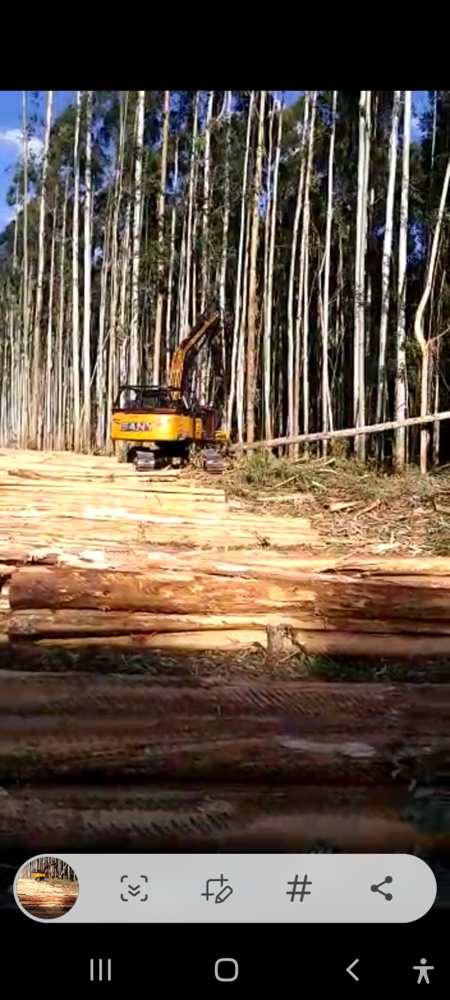
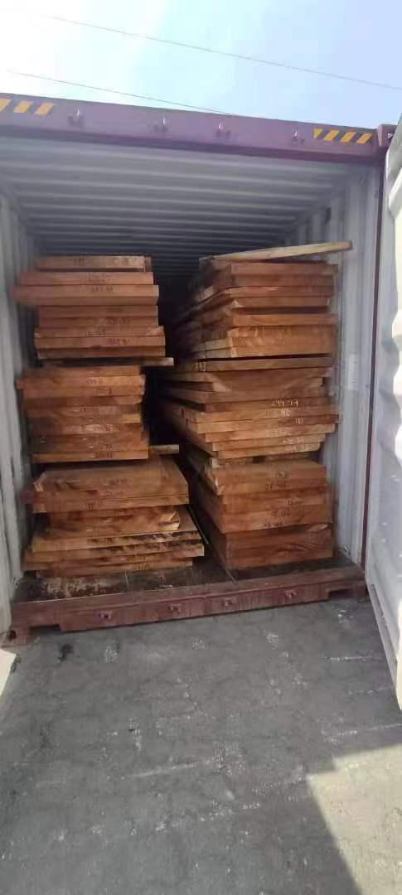
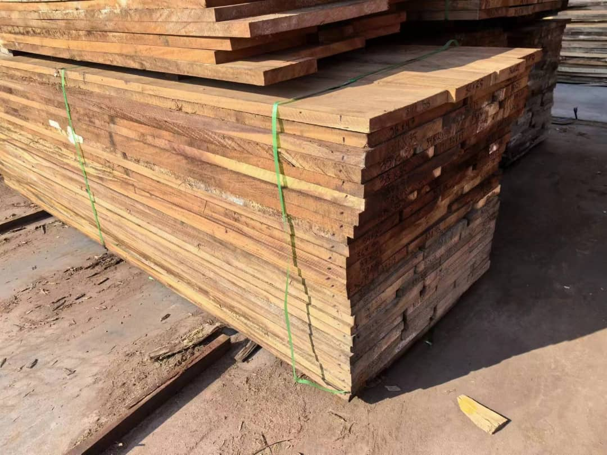

Maderas duras directo del aserradero
Comprar madera sin supervisión técnica experta suele traer mucho desperdicio, alabeo y costos inflados. Tendemos el puente entre los aserraderos sudamericanos y los compradores norteamericanos para garantizar la integridad estructural y el máximo rendimiento.
Selección precisa según la aplicación
Cada proyecto de construcción exige valores específicos de dureza Janka, resistencia a la flexión (MOR) y resistencia natural a la pudrición. Relacionamos los requisitos de tu proyecto con la especie exacta de madera dura sudamericana que cumple las especificaciones sin exceder el presupuesto.
Sin costos de intermediarios
Las cadenas habituales de importación de madera pasan por varios corredores, importadores y distribuidores regionales antes de llegar a tu patio. Negociamos tarifas por contenedor directamente con aserraderos socios y reducimos los márgenes intermedios hasta un 30 %.
Auditoría de calidad rigurosa
Nuestro equipo realiza inspecciones presenciales antes de cargar el contenedor. Verificamos los límites de humedad, el cumplimiento de la clasificación, las dimensiones precisas de las tablas y el secado correcto en horno.
Cómo funciona nuestro suministro
Desde las especificaciones estructurales iniciales hasta la entrega en tu patio, nuestra gestión integral mantiene tus proyectos abastecidos y dentro del presupuesto.
Consultoría del proyecto
Analizamos los requisitos de la obra, las cargas estructurales, la exposición a la intemperie y los objetivos estéticos para definir el perfil de madera ideal.
Selección directa del aserradero
Negociamos el suministro por contenedor directamente con aserraderos sudamericanos certificados, asegurando descuentos por volumen y garantías estrictas de clasificación.
Control de calidad en origen
Antes de la carga, cada lote pasa por una inspección presencial de humedad, integridad del núcleo, escuadrado de los cortes y cumplimiento de la tala sostenible.
Logística y entrega en patio
Gestionamos todos los trámites aduaneros, las tasas portuarias y el transporte en camión directo hasta tu obra o centro de distribución regional.
Galería de inspecciones e inventario
Una mirada a nuestras operaciones en aserraderos sudamericanos, las inspecciones de madera y la preparación de contenedores.






